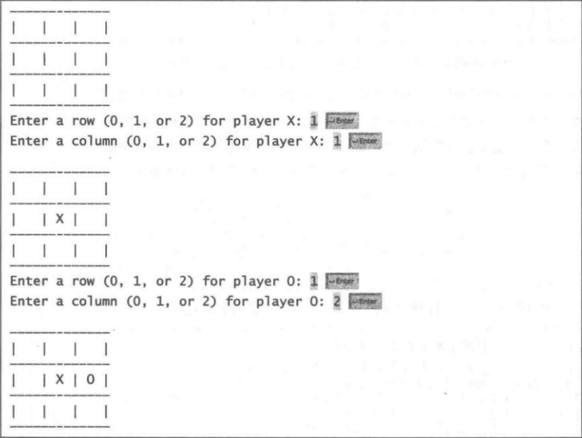
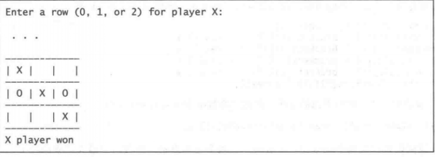

8.9 (游戏：#字游戏）在并字游戏中，两个玩家使用各自的标志（一方用X则另一方就用O)，轮流填写3x3的网格中的某个空格。当一个玩家在网格的水平方向、垂直方向或者对角线方向上出 现了三个相同的X或三个相同的O时，游戏结束，该玩家获胜。平局（没有贏家）是指当网格中所有的空格都被填满时没有任何一方的玩家获胜的情况。创建一个玩#字游戏的程序。 程序提示两个玩家可以选择X和O作为他们的标志。当输人一个标志时，程序在控制台上 重新显示棋盘，然后确定游戏的状态（是获胜、平局还是继续)。下面是一个运行示例：


以下为实现代码：
1 /** fileName:game.java
2 * 作用：#字游戏
3 * 创建日期：2019年10月10日
4 * 修改日期：2019年10月12日
5 * mail：xuangliang1@live.com
6 */
7 import java.util.Scanner;
8
9 public class game{
10
11 public static void main(String[] args){
12 Scanner input = new Scanner(System.in);
13
14 //玩家X O
15 String player1 = "X";
16 String player2 = "O";
17
18 //棋盘数组
19 String[][] chess = {{" "," "," "},
20 {" "," "," "},
21 {" "," "," "}};
22
23 /** 结束标志，ture为未有输赢结果，false为已有玩家赢或者平局 */
24 boolean endMask = true;
25
26 do {
27 //打印棋盘
28 chess = emu(chess);
29 //玩家1下棋
30 System.out.print("请玩家" + player1 + "输入横坐标(1 - 9): ");
31 int player1Scanner = input.nextInt();
32
33 //将玩家1下的结果输入到数组中
34 while(true){
35 if(chess[(player1Scanner - 1)/3][(player1Scanner - 1)%3] != player2){
36 chess[(player1Scanner - 1)/3][(player1Scanner - 1)%3] = player1;
37 break;
38 }
39 else{
40 System.out.print("请玩家" + player1 + "重新输入横坐标(1 - 9): ");
41 player1Scanner = input.nextInt();
42 }
43 }
44 //打印棋盘
45 chess = emu(chess);
46
47 //判断玩家1游戏结果
48 switch (maskGameResults(chess, player1)){
49 case 0: break;
50 case 1: System.out.println("玩家 " + player1 + " 获得胜利！");
51 endMask = false;
52 break;
53 case -1: System.out.println("游戏平局，请重来！");
54 endMask = false;
55 break;
56 }
57
58 //玩家2下棋
59 if(endMask){
60 System.out.print("请玩家" + player2 + "输入横坐标(1 - 9): ");
61 int player2Scanner = input.nextInt();
62 //将玩家2下的结果输入到数组中
63
64 while(true){
65 if(chess[(player2Scanner - 1)/3][(player2Scanner - 1)%3] != player1){
66 chess[(player2Scanner - 1)/3][(player2Scanner - 1)%3] = player2;
67 break;
68 }
69 else{
70 System.out.print("请玩家" + player2 + "重新输入横坐标(1 - 9): ");
71 player2Scanner = input.nextInt();
72 }
73 }
74
75 chess = emu(chess);
76 switch (maskGameResults(chess, player2)){
77 case 0: break;
78 case 2: System.out.println("玩家 " + player2 + " 获得胜利！");
79 endMask = false;
80 break;
81 case -1: System.out.println("游戏平局，请重来！");
82 break;
83 }
84 }
85 //打印棋盘
86
87 }while(endMask);
88
89 }
90
91 /** 打印棋盘 */
92 public static String[][] emu(String [][] chess){
93 System.out.println(" -------------------");
94 for(int i = 0; i<3; i++){
95 for(int j = 0; j<3; j++ ){
96 System.out.printf(" |%3s", chess[i][j]);
97 }
98 System.out.println(" |");
99 System.out.println(" -------------------");
100 }
101 return chess;
102 }
103
104 /** 判断玩家输赢 */
105 public static int maskGameResults(String m[][], String player){
106 //棋子连续数
107 int numberRow = 0;
108 if( (m[0][0]==player && m[0][1]==player && m[0][2]==player) ||
109 (m[1][0]==player && m[1][1]==player && m[1][2]==player) ||
110 (m[2][0]==player && m[2][1]==player && m[2][2]==player) ){
111 if(player == "X")
112 return 1;
113 else
114 return 2;
115 }
116 if( (m[0][0]==player && m[1][0]==player && m[2][0]==player) ||
117 (m[0][1]==player && m[1][1]==player && m[2][1]==player) ||
118 (m[0][2]==player && m[1][2]==player && m[2][2]==player) ){
119 if(player == "X")
120 return 1;
121 else
122 return 2;
123 }
124 if( (m[0][0]==player && m[1][1]==player && m[2][2]==player) ||
125 (m[0][2]==player && m[1][1]==player && m[2][0]==player) ){
126 if(player == "X")
127 return 1;
128 else
129 return 2;
130 }
131 for(int i = 0; i<3; i++){
132 for(int j = 0; j<3; j++){
133 if(m[j][i] == " ")
134 return 0;
135 }
136 }
137 return -1;
138 }
139 }新手刚学java，判断输赢的算法比较死，如有更好的解决方法请评论区留言。